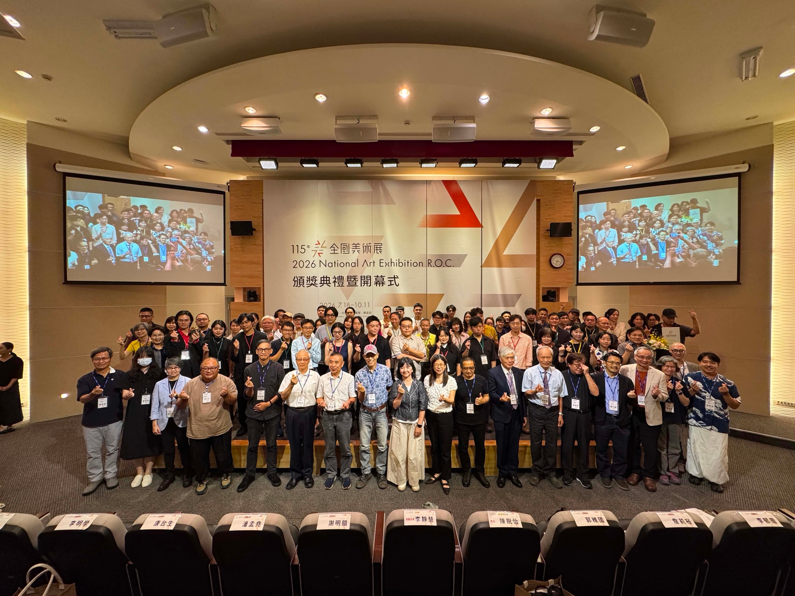
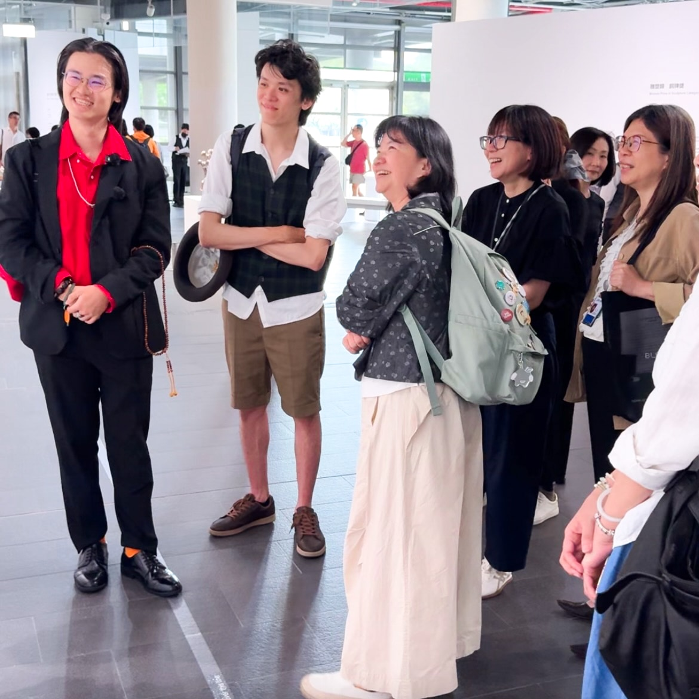

Photographic Collage Series was awarded the Third Prize & Special Award of the Year, 2026 SKM PHOTO International Photography Contest.
攝影拼貼系列榮獲 2026 新光三越國際攝影大賽 參獎 暨 年度特獎。

A long-term, ongoing mixed-media project
comprising three series.
Chaos Body Shop (2025–), a long-term, ongoing mixed-media project comprising three series: Photographic Collage (I, 2025), AI ID Photo Series (II, 2026), and Diamond Sutra Rearranged in Bopomofo (III, 2026).
攝影拼貼系列
2025
AI 證件照系列
2026
金剛經注音重排系列
2026
This work comprises 456 AI-generated ID photos, 7 photographic collages, and a hand-copied edition of the Diamond Sutra rearranged according to the order of the Bopomofo phonetic system. Through the deconstruction and reconstruction of text and image, it responds to contemporary idolatry, the question of true and false information, and identity politics in the age of AI.
Photographic Collage Series was awarded the Third Prize & Special Award of the Year, 2026 SKM PHOTO International Photography Contest.
攝影拼貼系列榮獲 2026 新光三越國際攝影大賽 參獎 暨 年度特獎。
When I Grow Up — single work from the AI ID Photo Series (II). Performance, 4×5 large-format black-and-white silver gelatin film, artist’s passport photograph, AI-generated ID photo. 2026 Gold Prize, Photography Category, National Art Exhibition R.O.C., National Taiwan Museum of Fine Arts, Taiwan.
AI 證件照系列單幅作品《長大》榮獲 2026 全國美術展 攝影類 金牌獎，國立臺灣美術館。
Our shop meticulously curates the finest selection of contemporary trends and retro religions. Utilizing our patented decontextualization technology, we surgically excise the face of the era and implant historical genes to custom-build the physique the masses crave most. Are you ready for the next “Summit War of Morality”? Strike the keyboard. Place your order now. You will fall in love with this power. We are the “Chaos Body Shop”!!!
拋棄那具陳腐的身軀吧！來到這座慾力構成的鬼島，歡迎隨意替換手腳、改寫認知並洗淨大腦。本店嚴選當代潮流與復古宗教，透過去脈絡化專利技術，精準切下時代面容，並植入歷史基因，為您量身打造群眾最喜愛的體態。準備迎接下一場「道德頂上戰爭」了嗎？敲擊鍵盤，即刻下單，您會愛上這股力量，我們是「無序身體販賣所」！
Photographic Collage (I)
Photographs of Taiwan’s public political and religious statuary. Paired as diptychs, they voice the decontextualization by which contemporary netizens argue online.


AI ID Photo Series (II)
![Work: When I Grow Up — a black-and-white 4×5 self-portrait at the centre: the bare-chested artist in glasses holds a tape measure in one hand to measure his own height (177.7 cm), while the other hand grips a roadside guardrail's stone post, its top trailing a length of broken wire — ringed by 177 AI-generated ID photos corresponding to the whole-number portion (deities, celebrities and anime characters from around the world), one of which is his real passport photograph with a corner cut off, representing the 0.7 cm remainder — set against dense, tangled tree branches.](../../../assets/img/chaos-body-shop/work-01-2400.webp)




Video Documentation
As a child, my height was measured daily; a series of horizontal lines on the wall recorded my growth. But once the body has set, how does thought continue to grow? Each era provides different nourishment: my parents’ generation relied on books and television; mine has been steeped in social media; will the next come of age by chewing on AI-generated text and image?
Situated in Taiwan, this hinge of global politics and geography, I observe that online and offline alike, contemporary netizens and public discourse habitually splice and appropriate concepts out of context, the sole aim being to win the argument. AI, this weapon of mass production, accelerates the dissemination of misinformation, disinformation, and malinformation through industrially manufactured text and image at an unprecedented pace.
Notably, in this work, AI generates religious and minority figures with consistent inaccuracy, yet renders characters from cinema, gaming, and anime with remarkable precision—this asymmetry mirrors the imbalance within AI training datasets between dominant and marginal cultures: what is mainstream enough to be repeatedly absorbed is accurately remembered; what is too obscure is overlooked, imagined, miscreated, forgotten. Worse, when these errors are recirculated and ingested into the next round of training data, falsehood becomes truth—when we type a question to the model, it confirms the error as correct, because that is the only data it has consumed. Like an ouroboros: garbage in, garbage out.
The word “idol” originally denoted an object of religious worship, the Greek eidolon, prohibited by the Hebrew decalogue. Its contemporary meaning, however, has shifted toward the veneration of celebrities in popular culture. In Mandarin, the character 神 (shén, “deity”) has likewise been appropriated for secular praise: 神人 (godlike person), 神作 (divine work), 神曲 (divine song), 神來一筆 (stroke of divine inspiration)—the form of veneration has changed, its spiritual structure has not.
The 456 AI-generated ID photos are sequenced from ancient Buddhist and Daoist deities, through traditional and new religious movements of various cultures, tarot archetypes, and folk legends, onward to figures from film, gaming, and anime, closing with political leaders. The most extreme form of contemporary idolatry and apotheosis, after all, may well be political fervor itself.
Diamond Sutra Rearranged in Bopomofo (III)
The physical outcome of this series is a hand-copied, sutra-fold book that shares its name with the project, Chaos Body Shop.
Sequenced from ancient Buddhist and Daoist deities, through traditional and new religious movements, tarot archetypes, and folk legends, onward to figures from film, gaming, and anime, closing with political leaders.
「凡所有相，皆是虛妄，
若見諸相非相，即見如來。」
Video Documentation 2


The phenomena described above, misinformation and idolatry alike, are nothing but empty appearances. This work rearranges the sutra according to the Bopomofo phonetic alphabet (ㄅㄆㄇㄈ, Taiwan’s distinctive Mandarin phonetic system), releasing this text, which already expounds on emptiness and ultimate reality, from its semantic context and returning it to pure sound.
Unlike English, in which each word carries autonomous meaning, a single Chinese character rarely stands on its own; once the structure of phrases is dismantled, only sound remains. With meaning shed, the text edges toward the “incantation”—the dhāraṇī, the mantra, the seed syllable, that is, the Buddhist tradition by which the Dharma is transmitted through prosody rather than vernacular speech. Rearranged into a phonetic table, the sutra becomes a practice for releasing attachment and returning to emptiness.
In contrast to the machine-generated images, the sutra was rearranged by hand. In the process of repeated transcription, the same character, similar characters, mechanically inscribed again and again, the artist gradually went blind to the script, unable to recognize what was being written, yet still bound to the labor. Meaning faded into the labor itself, leaving only the scraping back and forth of pen on paper. Perhaps this, too, is what the sutra intends when it speaks of:
「一切有為法，如夢幻泡影，
如露亦如電，應作如是觀。」